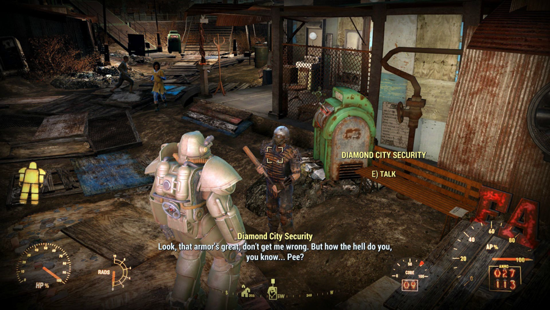

WILD WASTELAND WANDERER
"Another Settlement Needs Your Help"
- Preston Garvey
TRAILER
SYNOPSIS
The player is the Sole Survivor of Vault 111, who emerges 210 years to the day and time after the Great War. Prior to this, there is a brief period of gameplay during the pre-War era showing the player living with their spouse and child.
The gameplay has the ability to switch from first to third-person view. Additional features include a split-piece armor system (reminiscent of the armor system in Magic Warriors III: Magic Wind), base-building, a dynamic dialogue system, an in-depth crafting system that makes use of every lootable object in the game as a source of raw material and more. Enemies such as mole rats, mirelurks, raiders, super mutants, deathclaws, and ghouls return to the series.
The player character, the Sole Survivor, accesses the in-game menus through a Pip-Boy to manage statistics, maps, data, and items. Players can also find game cartridges with retro themed mini-games which can be played on the Pip-Boy. Another returning gameplay feature is the Vault-Tec Assisted Targeting System (V.A.T.S.), which can play a critical part in combat. While using V.A.T.S, real-time combat is slowed down, and action is played out from varying camera angles in a computer graphics version of "bullet time."
SCREENSHOTS
<
>
All rights reserved© 2017
FOLLOW US ON: